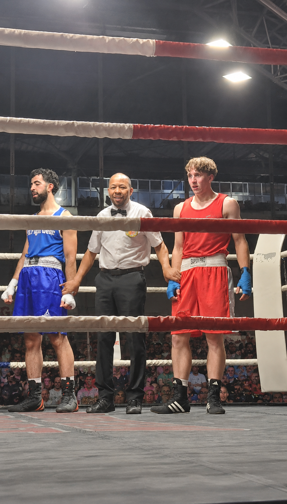

Branding Sinap
Volledig brandbook van Sinap, mijn personal brand als graphic designer.
Graphic designer & Brand designer — Student Digitale Vormgeving
Student uit Tienen. Interesse in branding, graphic design en UI/UX.
Stagezoekend voor WPL3 & WPL4.
Als student Digitale Vormgeving haal ik energie uit het ontwerpen van visuele content die mensen aanspreekt. Ik experimenteer graag met nieuwe stijlen en digitale technieken en ben altijd op zoek naar manieren om mijn vaardigheden te verbeteren. Samenwerken en creatief meedenken zijn voor mij vanzelfsprekend.
Ik studeerde eerst Lichamelijke Opvoeding en Bewegingswetenschappen aan de KU Leuven. Creativiteit en design hebben mij altijd geboeid, waardoor ik uiteindelijk mijn passie heb gevolgd richting digitale vormgeving.
UI/UX, Graphic design, Branding
HTML, CSS, JavaScript, SQL
Selectie van mijn leukste projecten.
Volledig brandbook van Sinap, mijn personal brand als graphic designer.

Affiche in A4-formaat voor de modeshow van Bijoutiful te promoten.

Logo voor Tuinwerken Sinap bv. Dit is een bedrijf dat tuinonderhoud en tuinaanleg doet, maar ook grondwerken en afbraakwerken.

Eigen futuristic font ontworpen.

Mijn persoonlijk CV.

Traditioneel kaartspel in het thema van de Noorse mythologie voor een viking brasserie in Noorwegen.

Volledig brandbook voor pommelien Thijs.
Pokr is een mobile-first app-concept gericht op kleine teams binnen KMO's. Het probleem dat Pokr oplost is herkenbaar: bedrijfsdoelen belanden te vaak in een Excel of PowerPoint, waarna er weinig meer mee gebeurt. Teams missen overzicht, eigenaarschap en een vast ritme om samen in te checken.
De opdracht voor ons team was volledig gefocust op UX/UI research en ontwerp — geen ontwikkeling van de app zelf. We werkten aan twee parallelle trajecten: de app én een commerciële marketingwebsite om het concept in de markt te zetten.
Concreet leverden we gebruikersonderzoek, een uitgewerkte informatie-architectuur, key screens en een klikbaar prototype op voor de kernflows van de app: een doel aanmaken, een wekelijkse check-in doen en een overzicht raadplegen van wat loopt en wat vastzit. Daarnaast ontwierpen we een volledige commerciële website die de waarde van Pokr helder en overtuigend communiceert naar de doelgroep: teamleads en medewerkers binnen kleine organisaties.
De uitdaging lag niet alleen in het design zelf, maar ook in de toon en de aanpak. Pokr wil bewust eenvoudig blijven — geen zwaar KPI-jargon, maar mensentaal. Dat vereiste een scherp begrip van de doelgroep en hoe zij communiceren over doelen en opvolging.
Binnen dit project lag mijn focus op drie gebieden: onderzoek, branding en het visuele design van de commerciële website.
Ik stuurde surveys uit naar de doelgroep — mensen die werken in kleine teams binnen KMO's — om inzicht te krijgen in hoe zij vandaag omgaan met doelen en opvolging. Die bevindingen vormden de basis voor onze designkeuzes en hielpen ons de juiste toon en structuur te bepalen.
Vanuit dat onderzoek werkte ik het campagneplan en de branding van Pokr uit. Dat betekende nadenken over de visuele identiteit: welk gevoel moet de app uitstralen, hoe spreken we de doelgroep aan en hoe onderscheiden we ons van generieke projectmanagementtools?
Het grootste deel van mijn tijd ging naar het volledig uitwerken van de commerciële website in Figma. Ik ontwierp alle pagina's van begin tot eind, met aandacht voor hoe je bezoekers stapsgewijs meeneemt van interesse naar overtuiging. Elk onderdeel van de pagina had een doel: mensen funnelen richting de kern van het verhaal en hen aanzetten tot actie.
Ik boks regelmatig en ga vaak lopen — beiden helpen mij om mentaal en fysiek scherp te blijven. Boksen geeft me discipline en focus, terwijl hardlopen ruimte biedt om ideeën te verwerken en energie op te laden.
